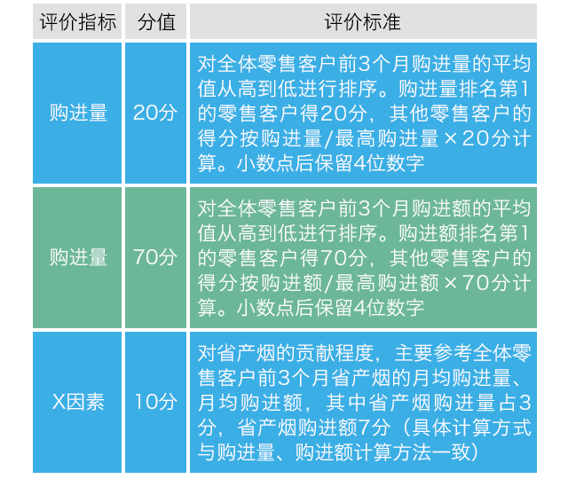

烟草专卖零售许可证申办流程
每月系统按照零售客户前三个月的历史销售数据，对卷烟购进数量、购进金额、X因素三个方面的指标加权测算，算出每个零售客户的经营能力得分，按照高低依次排名，依据20%、60%、20%的比例划分出大规模客户、中规模客户、小规模客户三个类别。大、中、小规模中的零售客户，按照零售客户数量均匀分布进行档位划分，其中大规模客户划分10档（每档位零售客户数约占全体零售客户数的2%）；中规模划分15档（每档位零售客户数约占全体零售客户数的4%）；小规模客户划分5档（每档位零售客户数约占全体零售客户数的4%）。具体评价及分档办法如下：
经营能力评价测算办法
表1 零售客户经营能力评估
具体计算公式如下：- 单客户购进量得分=（单零售客户卷烟购进量/全体零售客户中最大卷烟购进量）×20分
- 单客户购进额得分 =（单零售客户卷烟购进额/全体零售客户中最高卷烟购进额）×70分
- 单客户省产烟贡献得分 =（单零售客户省产烟购进量/全体零售客户中最大省产烟购进量）×3分＋（单零售客户省产烟购进额/全体零售客户中最高省产烟购进额）×7分
零售客户档位划分